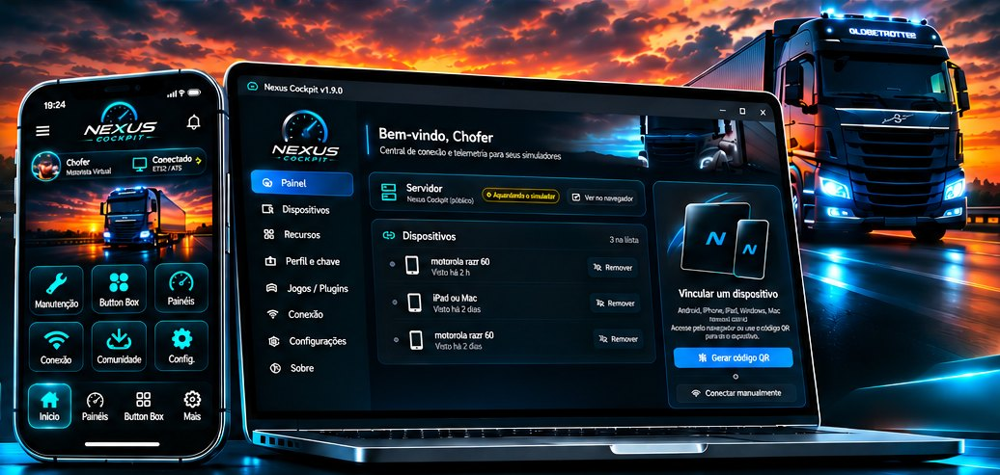
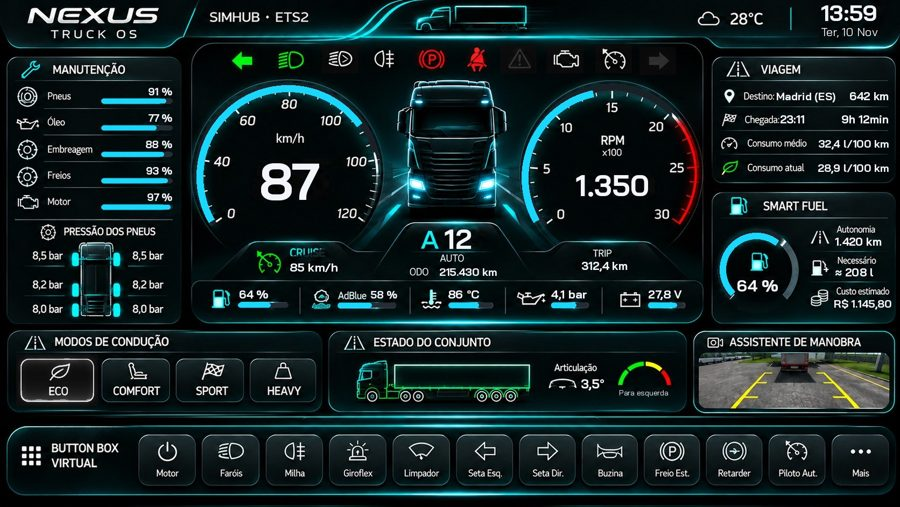

PARA QUEM LEVA O SIMULADOR A SÉRIO
O painel do seu caminhão,
no celular ou no PC.
Uma central completa para Euro Truck Simulator 2 e American Truck Simulator. Painéis no estilo SimHub, Button Box touch, manutenção, Smart Fuel, HUD, modos de condução, copiloto por voz e muito mais.

📘 Manual com todas as funções (PDF) · Grátis · O app e o programa se atualizam sozinhos.
Painéis Disponíveis
Escolha um painel e personalize sua experiência de simulação.
 Scania 113H
Scania 113H Nexus Cockpit A3
Nexus Cockpit A3 Nexus Cockpit A2
Nexus Cockpit A2 Nexus Cockpit A5
Nexus Cockpit A5 Nexus Cockpit A1
Nexus Cockpit A1 Nexus Cockpit A4
Nexus Cockpit A4Todos os painéis são grátis e baixam com um toque em Painéis da comunidade, dentro do app.
Recursos
Os dados ao vivo aparecem no painel; cada recurso liga, desliga e se configura no programa do PC.
Painéis do SimHub
Velocímetro, conta-giros, luzes e avisos com os mesmos visuais e fórmulas dos painéis do SimHub. Novos painéis da comunidade direto no app.
Button Box touch
Botões no celular que apertam as teclas do jogo de verdade: faróis, setas, motor, freios, cruise control e muito mais.
Manutenção
Óleo, pneus, embreagem, freios e revisão pelo hodômetro real, por caminhão. Consertar na oficina do jogo registra sozinho.
Consumo e Smart Fuel
Consumo de agora e da viagem. O Smart Fuel compara o tanque com o destino do GPS e avisa quanto abastecer.
Component Simulation
Embreagem, pneus, freios, suspensão e bateria com desgaste pelo seu jeito de dirigir — e a causa de cada um.
Modos de condução
Eco, Comfort, Sport e Heavy com dicas na hora e nota da viagem. Troque pelo botão do volante e o painel muda junto.
HUD
Tela simplificada de fundo preto, com opção de espelhar: velocidade, limite, marcha, setas, GPS e alertas.
Copiloto por voz
“Quanto falta para o destino?”, “verificar o caminhão”, “modo eco”. O copiloto responde falando.
Perfil e chave digital
Perfis de motorista com estatísticas. Segure START ENGINE no app: checagem dos sistemas e partida no jogo.
Assistente de manobra
Na ré, desenho visto de cima com o ângulo da carreta, o caminho previsto e o alerta de canivete.
Força no volante BETA
O Nexus assume o force feedback: leve manobrando, firme na estrada, vibração nos buracos e peso da carga.
Atualização automática NOVO
O app e o programa avisam quando sai versão nova e instalam por cima, sem baixar de novo pelo site.
iPhone e iPad pelo navegador NOVO
Leia o QR code do programa: a página abre na hora e espera o jogo carregar sozinha.
Conta opcional
Entre com Google ou e-mail para participar da comunidade. O app funciona sem login.
Button Box
Cada toque aperta a tecla certa no jogo, pelo próprio plugin do PC — sem programa extra.



Como instalar
Leva uns 2 minutos.
- No PC, com o jogo fechadoAbra o NexusCockpit_Setup.exe e clique em Avançar → Instalar → Concluir. Ele encontra o ETS2 e o ATS sozinho. Se o Windows mostrar “O Windows protegeu o computador”, clique em Mais informações → Executar assim mesmo.
- No celular ou tablet AndroidInstale o NexusCockpit.apk (se pedir, permita “instalar apps desta fonte”).
- Abra o jogoClique OK no aviso do SDK.
- Abra o appCom o PC e o celular no mesmo Wi-Fi, ele encontra o PC sozinho — é só dirigir.
- Configure os recursosNo programa Nexus Cockpit do PC, página Recursos. O manual em PDF vem junto e explica cada função.
iPhone e iPad
Sem App Store e sem instalar nada: o painel abre direto no Safari.
- No PCAbra o programa Nexus Cockpit e toque em “Gerar código QR”. Aparece o endereço do painel na sua rede (ex.: http://192.168.0.10:31416).
- No iPhone ou iPadAponte a câmera para o QR code, no mesmo Wi-Fi do PC. Se o jogo ainda estiver fechado, aparece “Aguardando conexão” e o painel abre sozinho quando ele carregar.
- Deixe com cara de appToque em Compartilhar → Adicionar à Tela de Início. O Nexus Cockpit ganha ícone e abre em tela cheia.
Funciona também em tablets Android antigos e em qualquer aparelho com navegador.
 Servidor Prime Rotas
Servidor Prime Rotas